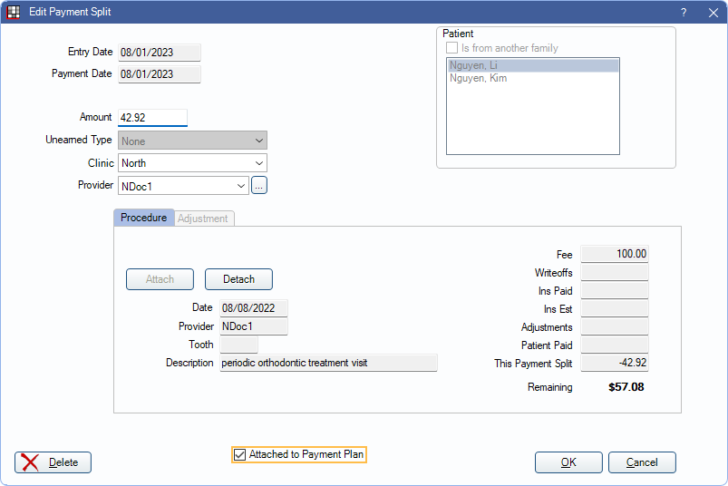

Paysplit Revise
Paysplits that have already been allocated to an adjustment, payment plan, procedure, or unearned income may be edited or reallocated.
In the Payment window, double-click an existing Paysplit to edit.

If the payment is attached to an Accounting entry, the original paysplits may only be edited within the first 48 hours of the payment date.
We recommend only editing existing paysplits on the same day the payment is created to avoid changing historical records and reports.
To edit a paysplit older than 24 hours, transfer the income instead of making changes to the original split. See Income Transfer.
Allocate a Paysplit to another Procedure or Adjustment
Open the original payment. From the Payment window, double-click a payment split to edit. The Edit Payment Split window will open to the either the Procedure or Adjustment tab, depending on which is attached to the split.
- Click Detach to remove the current item.
- Select the family member to re-allocate the paysplit to (upper right).
- Check Is from another family to select a patient outside the current family list. The Select Patient will open. Select the patient to re-allocate to from here.
- Click Attach to select a new procedure or adjustment.
- If attaching a procedure, the Select Procedure will open.
- If attaching an adjustment, the Adjustment Select window will open, showing any unattached adjustments (i.e., adjustments not linked to a procedure).
- Select the item and click OK. The clinic and provider will automatically update to what is assigned to the procedure or adjustment.
- (Optional) Edit the paysplit Amount. If editing the amount, the difference needs to added or subtracted from another paysplit so the total payment amount matches the sum of the payment splits.
- Click OK to save the paysplit.
- Repeat steps 1-6 as needed for each paysplit that needs changed then click OK on the Payment window to save changes.
Allocate a Paysplit to a Payment Plan
To allocate a paysplit to an existing Payment Plan:
- Open the original payment.
- From the Payment window, double-click a payment split.
- The Edit Payment Split window will open to the either the Procedure or Adjustment tab, depending on which is attached to the split. If the paysplit is already attached to an item,
- Click Detach.
- Verify the Clinic and Provider.
- Check the Attached to Payment Plan box. 
- If more than one payment plan exists for the family, the Select Payment Plan window will open.
- Select the payment plan.
- Click OK.

- Click OK on the Edit Payment Split window to complete the payment split.